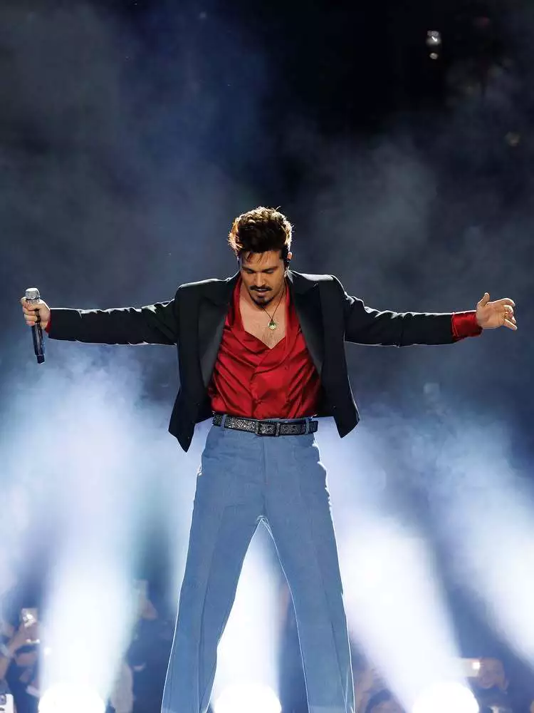

Meu primeiro post
Por: Isadora da Silva
Olá, sejam muito bem vindos ao meu novo blog! Aqui vou compartilhar informações sobre a carreira do cantor Luan Santana e sua trajetória no mundo musical.
Vou compartilhar curiosidades sobre o cantor e sua vida

Por: Isadora da Silva
Olá, sejam muito bem vindos ao meu novo blog! Aqui vou compartilhar informações sobre a carreira do cantor Luan Santana e sua trajetória no mundo musical.